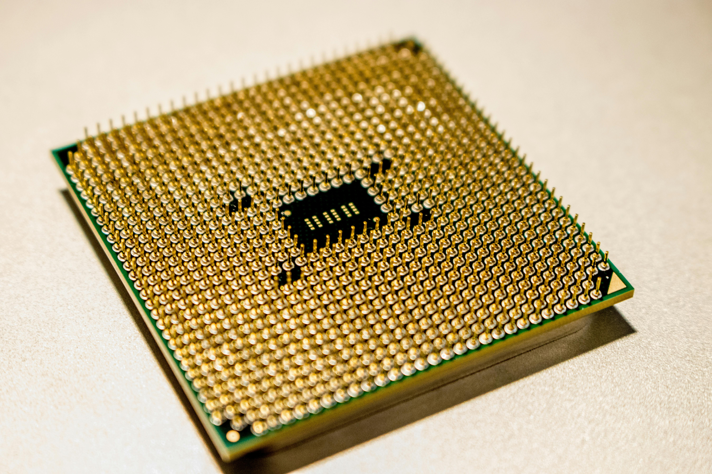
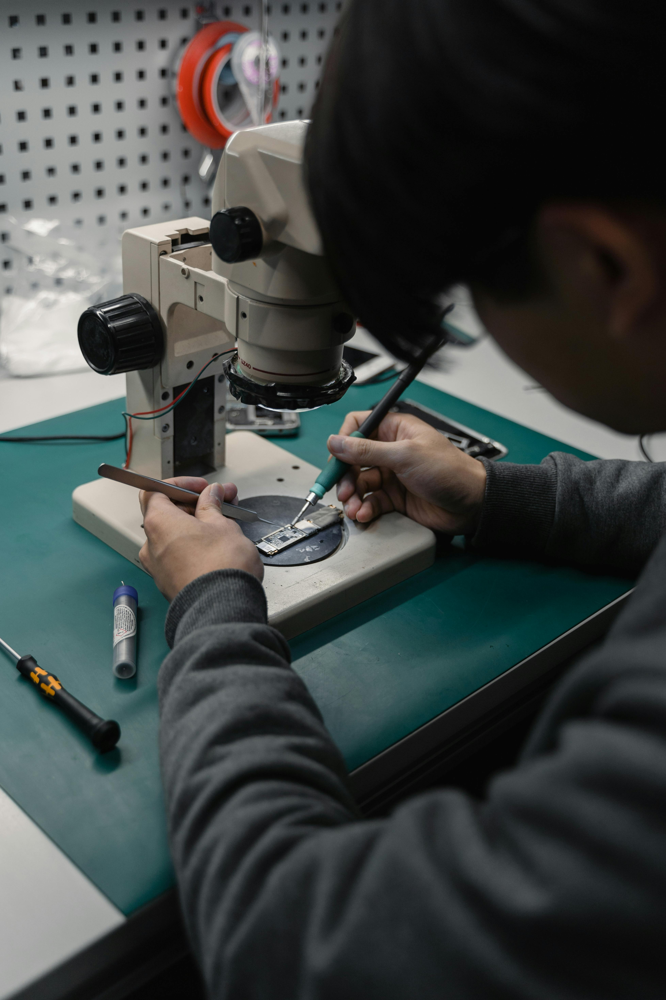

Llamado a la acción
En esta comunidad, seguimos buscando personas interesadas en continuar apoyando el avance científico y tecnológico. Esta página está destinada a cualquier persona que quiera ingresar y tenga ideas inusuales que puedan apoyar a esta comunidad o ayudarte a unirte a ella.
Llamado a la acción